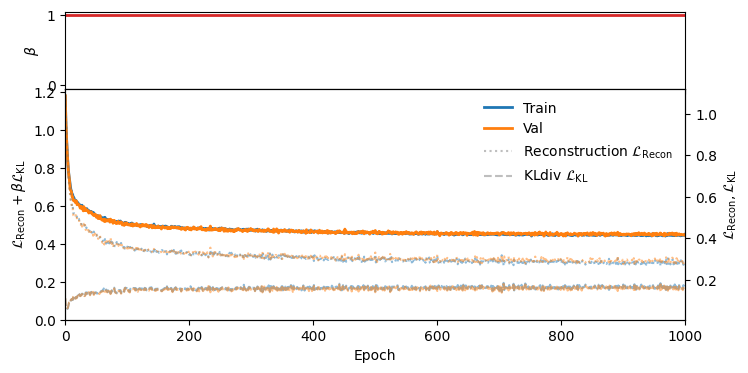

Investigating different Betas#
We try three cases:
Case 1: Beta is constant at 0 (ie KL divergence isnt used)
Case 2: Beta is constant at 1 (vanilla VAE)
Case 3: Beta is cyclical between 0 and 1 and stays at 1 for 50% of the time
Case 4: Beta is monotonic, starts at 0, ramps up till 1 for firsst 50% of the time.
Plot Type |
Case 1 |
Case 2 |
Case 3 |
Case 4 |
|---|---|---|---|---|
Loss Plot |
 | 
|
||
Reconstructions |

|

|
||
CI Plot |

|
Code#
import os
from starccato_jax.data import load_data
from starccato_jax.sampler import sample_latent_vars_given_data
from starccato_jax.trainer import Config, train_vae
HERE = os.path.dirname(__file__)
OUT_BETA_RAMP = os.path.join(HERE, "out_models/beta_monotonic")
OUT_BETA_1 = os.path.join(HERE, "out_models/beta_1")
OUT_BETA_0 = os.path.join(HERE, "out_models/beta_0")
OUT_BETA_CYCLICAL = os.path.join(HERE, "out_models/beta_cyclical")
Z_SIZE = 24
config_args = dict(latent_dim=Z_SIZE, epochs=1000)
kwargs = [
dict(
save_dir=OUT_BETA_RAMP,
config=Config(
beta_start=0,
beta_end=1,
cyclical_annealing_cycles=1,
**config_args,
),
),
dict(
save_dir=OUT_BETA_0,
config=Config(beta_start=0, beta_end=0, **config_args),
),
dict(
save_dir=OUT_BETA_CYCLICAL,
config=Config(
beta_start=0,
beta_end=1,
cyclical_annealing_cycles=3,
**config_args,
),
),
dict(
save_dir=OUT_BETA_1,
config=Config(beta_start=1, beta_end=1, **config_args),
),
]
def main():
train_data, val_data = load_data()
for kw in kwargs:
train_vae(train_data, val_data, **kw, plot_every=50)
sample_latent_vars_given_data(
val_data[0], model_path=kw["save_dir"], outdir=kw["save_dir"]
)
if __name__ == "__main__":
main()